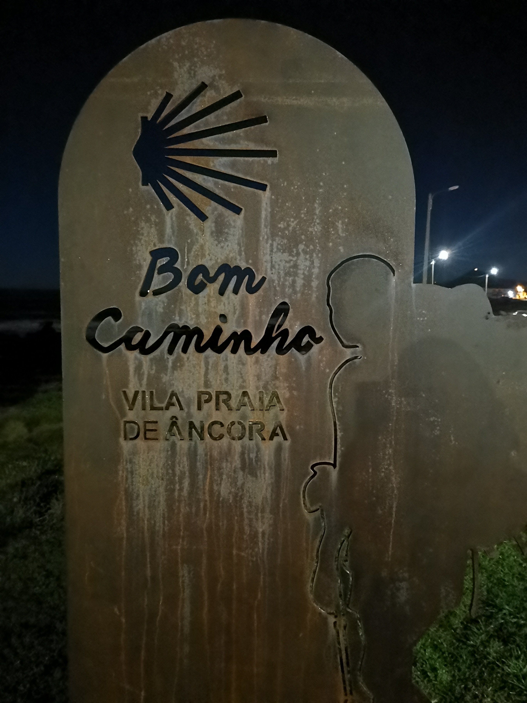
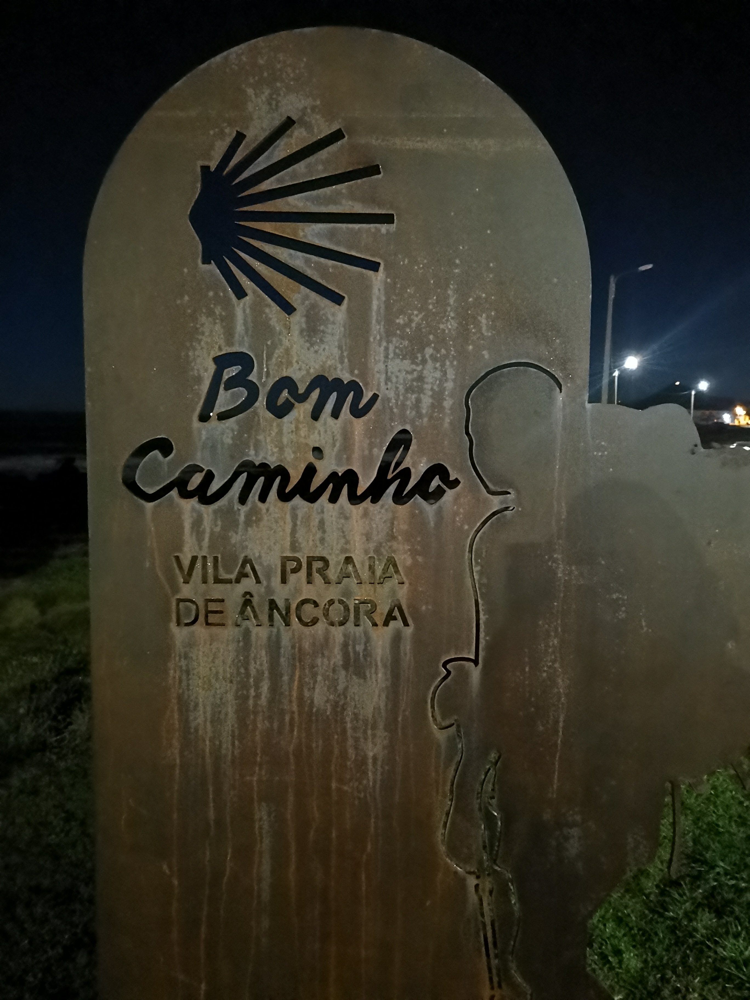
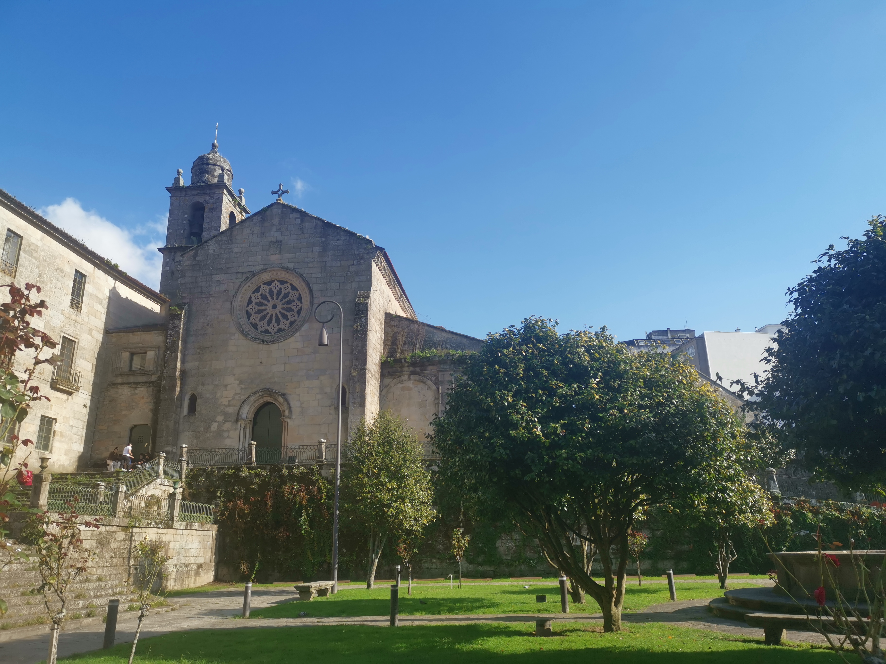
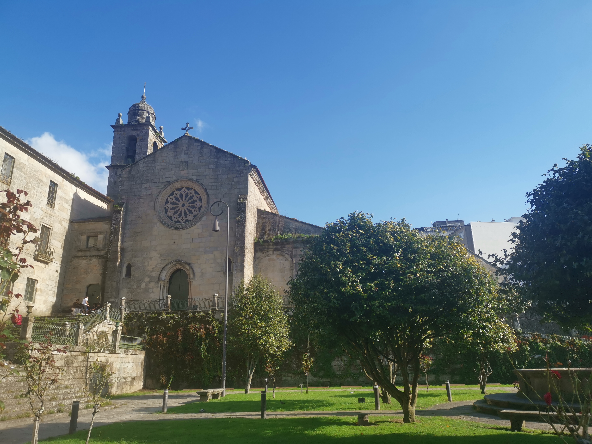

O mně
Jsem jaká jsem a ještě k tomu mám muže a čtyři děti. A taky mám tři různé práce, spoustu koníčků a přátel.
Dlouho jsem přemýšlela, jak oslavit svoje kulatiny, až jsem na to přišla - PUTOVÁNÍM. A protože na konci října už je u nás dost chladno, tak jsem zhmotnila můj sen a vyrazila do Porta, odkud jsem putovala po svých přes Portugalsko a Španělsko.
Cesta
Cesta byla ten hlavní cíl. Jít, užívat si volnosti, svobody jít, kam se mi zachce. Některé části vedly přírodou, jindy jsem šlapala po asfaltu mezi městy. Občas jsem u oceánu uhnula z oficiální cesty, abych déle mohla jít po pláži. Většinu cesty jsem šla sama, ale když jsem měla potřebu si popovídat, tak se vždycky někdo našel.


Značky
Cesta do Santiaga je značená. Značky jsou různorodé, ale většinou je na nich mušle a pokud jsou barevné, tak mají modrou nebo žlutou barvu. Ve městech byly často jen žluté šipky nastříkané na zemi. Nicméně se mi stávalo, že na křižovatkách najednou značka nikde. V tomto případě nikdy nezklamaly Mapy,.cz. a nebo i místní ochotně poradili.

 


Ubytování
Vzhledem k chladnějšímu počasí a snaze o minimalizaci věcí v batohu, jsem přespávala v poutnických ubytovnách zvaných Albergue. Ceny se pohybovaly od 8 do 15 euro za noc.
Nejlevnější ubytování byla veřejná a jednalo se o obrovské místnosti, kde spalo od 10 do 20 lidí najednou. Dražší byla soukromá a také tam člověk měl více soukromí - záclonku u postele, méně lidí v pokoji.
Nicméně všude byla sprcha a splachovací záchod, což je po celodenním putování vše, co chceš :) A taky je skvělé, že člověk večer může posedět a popovídat s ostatními poutníky.
Místa
Díky tomu, že jsem tuto cestu šla sama, jsem mohla vyrážet na cestu kdykoliv jsem se rozhodla. A tak se stávalo, že jsem se občas probudila ještě před rozedněním a vyrazila na cestu za svitu měsíce. A snídani si pak užívala při východu slunce na kameni u oceánu.
Cestou jsem obdivovala, jak přírodní scenérie (hlavně ten oceán), tak nádherné kamenné historické stavby. A tak se stalo, že největší "duchovní osvícení" jsem zažila na asfaltové čtyřproudovce, kde to bylo monotónní a konečně nebylo na co koukat :)
 

Santiaaaagoooo
A tady už jsem v cíli - pravda, dojela jsem tam vlakem. Jinak bych potřebovala ještě aspoň 2 dny, které jsem bohužel neměla.
Ale pevně věřím, že jsem cestu do Santiaga nešla naposled. Ráda bych na to měla víc času a vyzkoušela i další z mnoha cest. Nejvíce poutníci chválili variantu Primitivo.
Pokud byste taky rádi vyrazili, tak neváhejte a jděte.
BUEN CAMINO.